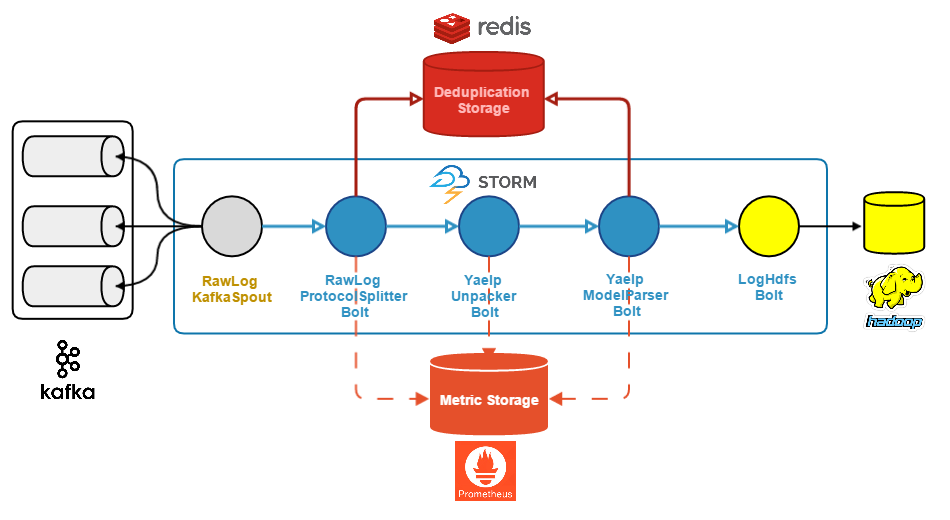

Proposta per a una arquitectura escalable d'ingesta de missatges
Oriol López Sánchez
Processament de missatges
Es genera l'evidència i és capturada per un dispositiu

El dispositiu l'envia a un servei web per a:
- Validació
- Enriquiment

L'evidència es canalitza a través d' Apache Flume

Eventualment, acaba sent persistida al cluster per un Sink Agent de Flume.
Problemes existents
Poden haver problemes de duplicitats de diferents fonts d'origen.
La validació feta pel servidor web és extremadament costosa.
Les evidències no arriben prou aviat.
No existeix cap component de monitoratge actiu sobre el processament d'evidències.
Objectius
- Definir una arquitectura més escalable.
- Processar les evidències més ràpidament.
- Monitorar els diferents entorns per avaluar el seu rendiment.
- Evitar la duplicitat de processament d'evències.
Processament de missatges en temps real
Log Gateway


Log Gateway
És un servei dedicat a escoltar les evidències enviades pels dispositius.
- Ofereix una implementació simple.
- Assegura que totes les evidències puguin arribar al log pipeline.
- Permet una alta capacitat de consumició d'evidències.
Cicle de vida d'una evidència
Enviament d'evidències amb Kafka
- Integració amb Kafka mitjançant programació orientada a aspectes.
- "Ser/Deser" amb Kryo.
- Les evidències es reparteixen entre totes les particions de Kafka disponibles.
Log Pipeline
Objectius del Log Pipeline
- Validació
- Deduplicació
- Enriquiment
ende
Podeu trobar el codi del projecte a: github.com/Mithrandir0x/pae